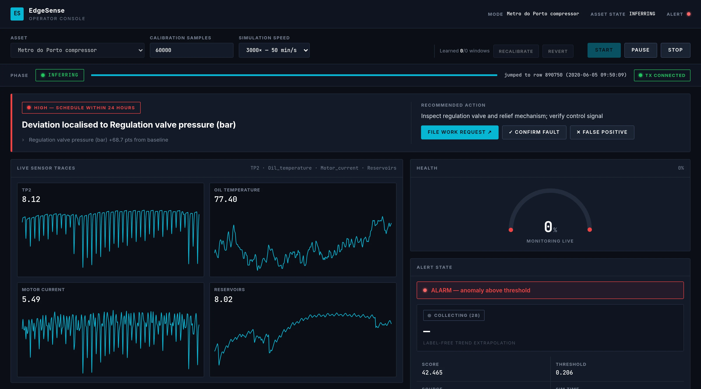

Pour l’usine
Moins d’arrêts imprévus : on intervient avant la panne, sur un créneau planifié.
Maintenance prédictive · IA embarquée
La maintenance prédictive pour les usines qui n’ont pas d’équipe data
Équipe projet : Prénom NOM
Tuteur : Prénom NOM
Point de départ · stage chez Groupe Bel, Maroc
chaque ligne remonte ses mesures
outils Siemens, tout est stocké
des courbes, rien de plus
personne n’est prévenu avant la panne
L’usine avait fait l’effort de tout collecter. Il manquait l’étape qui prévient le technicien.
Positionnement indicatif
Un boîtier qu’on branche sur les automates de l’usine. Il prévient le technicien avant la panne.
le technicien confirme ou rejette : EdgeSense apprend
les mesures que l’usine a déjà
apprend ce qui est normal, repère ce qui dérive
alerte, cause probable, urgence
ticket d’intervention pré-rempli
intervient avant la panne
il lit les automates et le réseau déjà en place
il apprend le fonctionnement normal
aucune donnée brute ne quitte l’usine

1 2 3TRL 4 : prototype validé en laboratoire, sur données industrielles réelles
Moins d’arrêts imprévus : on intervient avant la panne, sur un créneau planifié.
Il sait quoi vérifier avant de se déplacer, et ses retours améliorent le système.
Moins de pertes de matière et d’énergie (fuites d’air comprimé), et des données qui restent à l’usine.
20 entretiens avec des responsables maintenance
l’historique d’un vrai site, rejoué dans EdgeSense
connecteur OPC UA / Siemens S7, boîtier sur une ligne
EdgeSense : de la maintenance prédictive pour les usines qui n’ont pas d’équipe data.
Think It & Do It
EdgeSense · github.com/mosouab/EdgeSense